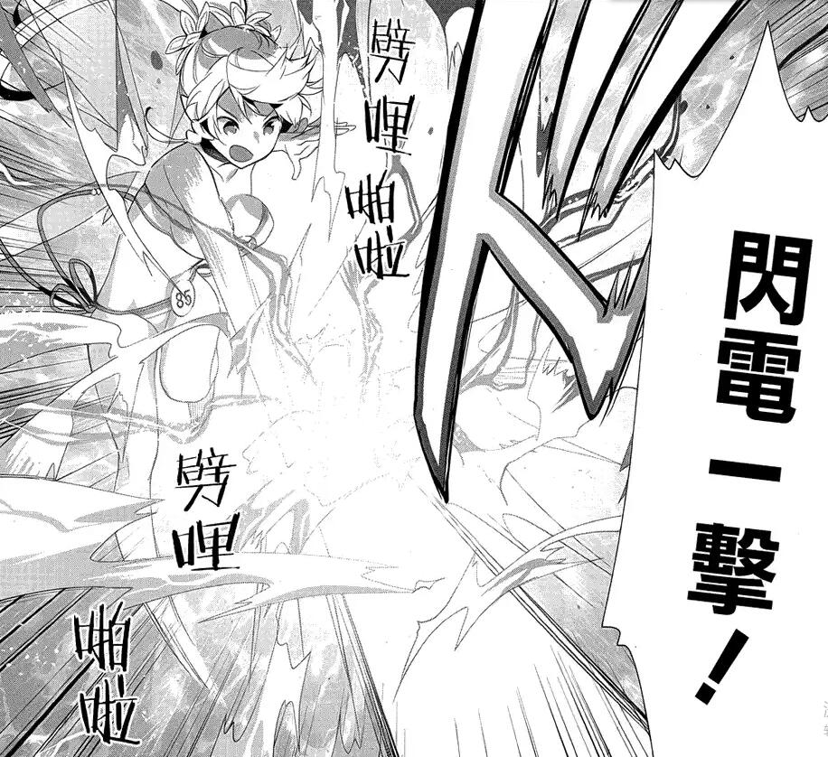
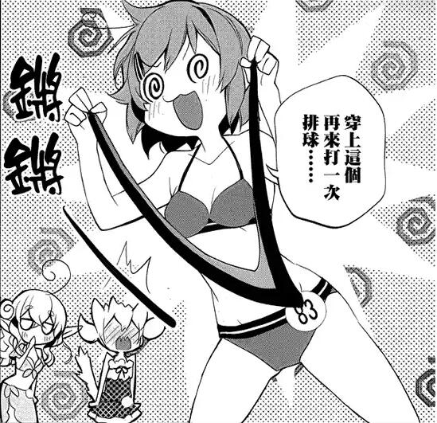

第二百二十七章 世界真的越来越热闹了
黝黑的皮肤！
摇晃的胸·部！
飞扬的热汗！
还有……摇晃的胸·部！
美少女们的沙滩排球无疑的相当吸睛的一向运动！
莉法＆路克丝VS莉兹贝特＆西莉卡！
这场平天下和聚人心的理念之争在烈日之下、于沙滩之上展开了新一轮的交锋！
虽然莉兹贝特是说认真热血的胜负会激发沙滩上游客的兴趣，进而将会收集到【目光】，但是其真实手段，无疑是……
“sdfhrjferyg……”
以莉法的吟唱为开局，这场沙滩排球走向了不可知的为了！
“闪电一击！！！”
新ALO大大的提升了技能的自由度，将魔法或者剑技加持到排球上这种事也是可以做到的，因此……
SIL——GameOver!
LEA——LVUP！
“这一球！决胜负！”
本次沙滩之旅饱受莉兹压迫的莉法擅自作出了结束排球比赛的宣言！击中了西莉卡的脸而被反弹回来的球在莉法的魔法加持下带着旋风气势汹汹的冲向莉兹贝特。
“旋风扣杀！！！”
和刚刚一样，虽然魔法的名字不是这个，但是冠以一个威风的名字无疑可以提升气势。
“不要……”声音从莉兹的喉咙里压抑着挤出来，但并非是求饶的话语，“……不要小瞧这双锻造了数千把剑的手啊！！！”
曾经是SAO里最优秀的锻造师的莉兹贝特，在ALO里也继承了曾经的属性，或许在敏捷上比不上莉法，但是力量值上莉兹贝特可以完胜莉法，纵使被魔法加持的排球，莉兹贝特也将其用双手稳稳的接下并且击飞了出去。
“这样的话再来一球……”
莉法想要对着击飞上来的球再度施以附带魔法效果的击打。
“太天真了！”
但是紧随着挑起来的莉兹贝特却破坏了莉法的计划，两人同时抓着球，高端玩家强横的力量值让圆圆的球变形，似乎随时都会爆开一样。
“不但用了魔法，还用了翅膀？”月姬无语的看着飞在天空中的两人，虽然四人有邀请她和蓝子还有优纪参加，不过她们都没有参加泳衣大赛，蓝子和优纪也不想和陌生人太接近，所以拒绝了，三人一起充当吃瓜群众——真的是在吃西瓜！
变形的球并没有爆开，而是从两人的手掌间滑了出去，向着更高空飞了上去，莉兹和莉法两人也紧随其上，在十多米高的空中展开了激烈的排球争夺战，将沙滩排球的游戏规则完全的抛之脑后！
“已经算不上在打沙滩排球了啊……”路克丝带着苦笑说出了真相。
“她们其实都很好强啊……”西莉卡回血完毕同样苦笑着看着天上的两人。
将普通的沙滩排球玩成了杀人排球，这种事情她只在电视上报道看过，记得是某两个高校的网球社借用假想世界的便利，在某个游戏里约战，将普通的网球比赛变成了相当凶残的厮杀。
比赛的录像在网上传的很火，后来因为这件事，有个公司抓住商机推出了一款体育竞技类的游戏——《热血高校》，集网球、足球、篮球、棒球、排球等多种运动项目于一个游戏里向全国高校撒网。
传闻【体育厅】似乎也有要将现实的体育运动搬到假想世界的打算，目前已经在湘北、青学、南葛、乌野等多所中学高中试点，探索将体育运动搬到游戏里，并且合理安排训练时间和项目保证线下真实身体体能不衰退的可行性。
完全潜行技术对于现实的利弊问题一直是相关部门争论不休的题目，虽然它为现实节约了很多资源没错，比如各校的不良们为了节省医药费，将打架搬到游戏里，这也导致青少年犯罪指数大幅度下滑，虽然很让人欣慰没错，但是不说假想世界里青少年做了坏事不好管理纠正——因为有个自称红衣骑士团的非官方组织在假想世界里有针对这种行为进行约束——就说近期统计的全国高校学生的体能测试结果，比之去年又下滑了不少。相关部门很是忧虑国家未来一代因为长期完全潜行导致的体能衰退的问题。
“哦哦哦哦哦——”
虽然事件的发展超乎预料，但是人们喜欢的就是意外，围观的群众燃起来了！
莉兹贝特的原话是用运动点燃围观群众的热情，事实也是如此没错，但是如果往莉法因为剧烈运动而颤动的胸怀上聚集的视线能少一点的话，更加能证明莉兹贝特手段的正当性。
今天的泳衣大赛里，莉法在被有意识和无意识之间卖出了不少福利，虽然换取了大量的关注没错，但是……
“为什么没有改变啊！！！”
莉兹贝特目瞪口呆的看着排名的广告版，说没有改变，也不尽然，没有改变的是排名落后的形式，四个女孩各种的排名还是有在变动的，只不过——
68th 85 LEA 15554
75th 86 LUX 15101
80th 84 SIL 14644
83th 83 LIZ 14611
四人的分数虽然在提升，但是其他人提升的更多，因而四人的排名极大程度的下滑了！
“究竟要怎么做才好……”莉法很忧郁，明明已经做出了那么大的牺牲了，虽然她是四人里分数最高的，但是排名还是从第43个掉到了第68个，她也发现问题的重点是其他人分数提升的为什么会那么快。
“我们这边也要全力走性感路线！！！”
秉持着有两个乳牛在，反正卖肉的不是自己的信念，莉兹贝特毫不气馁的作出宣言！
虽然莉法、路克丝和西莉卡都有着不好的预感，但是将西瓜籽从嘴里吐出来的吃瓜观众却感觉，之后的发展似乎更有趣了。
离开不久又再度回来的莉兹贝特为观众老爷们带来的是——
兔耳女郎——西莉卡！
黑丝燕尾服丽人——路克丝！
以及，舞娘X2!
莉法一如既往的超暴露呢！
然而……
“做了那么多，居然还是不行……”莉兹贝特很失败的趴在桌子上，但是脸上并没有灰心丧气的神色，从道具栏里拿出不知道是什么时候搜集到的特殊泳衣！“穿这个再来打一次排球！！！”
“这个能穿吗！！！”莉法突然炸毛了，就算莉兹还没有指名，但是对于有些呆的路克丝似乎下不了手的锻造师，无疑是打算让自己穿上那件不可名状之物！
那种东西，在家里穿穿也就算了，正常人都不可能会穿出了见人的吧！
……
【为了给你们制造槽点，咱也是费尽心思了，今天又加了一点东西，不过没有把全部学校排出来，咱这是贴心的为原作解释为什么能那么的反物理,咱是好人……貌似没听说杀人篮球什么的，黑子的篮球杀人吗？咱没看过啊，除了湘北和青学是一目了然，另外两个，或许你们得百度才知道是哪里。】【话说，有一半是原著漫画剧情来着……混字数真好，反正诸位看过小说的不多，看了小说都没有写的番外漫画的更少！抽空咱也要补一补《小刀剑神域》还有《外传·GGO》】